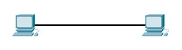
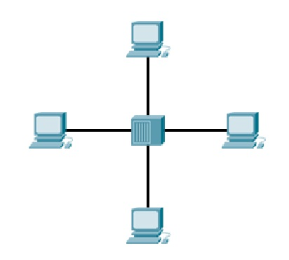
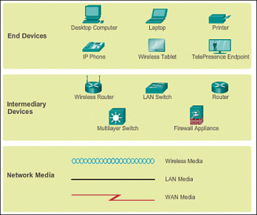

តើអ្វីទៅជា Network?¶
A computer network គឺក្រុមនៃកុំព្យូទ័រ ឫជាប្រពន្ធ័នៃការតភ្ជាប់device(ឧបករណ៍)រវាងគ្នាក្នុងគោលបំណងបង្កើតទំនាក់ទំនង ឫក៏ចែកចាយresources(ធនធាន ដូចជា files, printer,...) និង សេវាកម្ម(services) ដោយប្រើប្រាស់common standard (ស្តង់ដារួម) ហៅថា protocol។ ដើម្បីបង្កើត និងតភ្ជាប់បានជាបណ្ដាញកុំព្យូទ័រ យើងត្រូវការកុំព្យូទ័រ(clients and servers) និងឧបករណ៍ហេដ្ឋារចនាសម្ពន្ធបណ្ដាញ។
Note
Client ជាផ្នែកមួយនៃកុំព្យូទ័រ(hardware or software)ដែលaccessសេវាកម្មដែលអាចផ្ដល់ដោយserver។ ចំនែក server នៅលើកុំព្យូទ័រផ្សេងគ្នា (ឫក៏លើកុំព្យូទ័រតែមួយ) ដែលclientអាចចូលទៅប្រើប្រាស់សេវាកម្ម(aceess the service)តាមរបៀបnetwork។ (ប្រភពនៅទីនេះ)

- បណ្ដាញផ្ដល់អោយយើងមានភាពងាយស្រួលដូចជា៖
- ទំនាក់ទំនង
- ការសិក្សា
- ការងារ
- ការកំសាន្ដ
ក្រលេកមកមើលឧទាហរណ៍ខាងក្រោម៖¶
នៅក្នុងរូបខាងលើ យើងឃើញមានកុំព្យូទ័រចំនួនពីរតភ្ជាប់គ្នាដោយប្រើប្រាស់ខ្សែ(cable)។ ទំរង់Networkដ៏តូចមួយនេះអាចប្រើសំរាប់ផ្លាស់ប្ដូរ(exchange)ទិន្នន័យរវាងគ្នាបាន។
ចំនែកឯនៅក្នុងរូបនេះវិញ គឺមានកុំព្យូទ័រច្រើនតភ្ជាប់គ្នា ដោយប្រើHub ឫក៏Switchជាចំនុចកណ្ដាលដែលអាចពង្រីកទំរង់Networឪ្យធំជាងមុន។
ធាតុផ្សំនៃNetwork៖¶
សូមអ្នកកុំអាលបារម្ភបើមិនទាន់យល់អ្វីទៅជា Hub? Switch? ខ្ញុំនឹងបកស្រាយពន្យល់ជាបន្តបន្ទាប់បន្តិចទៀតនេះ។